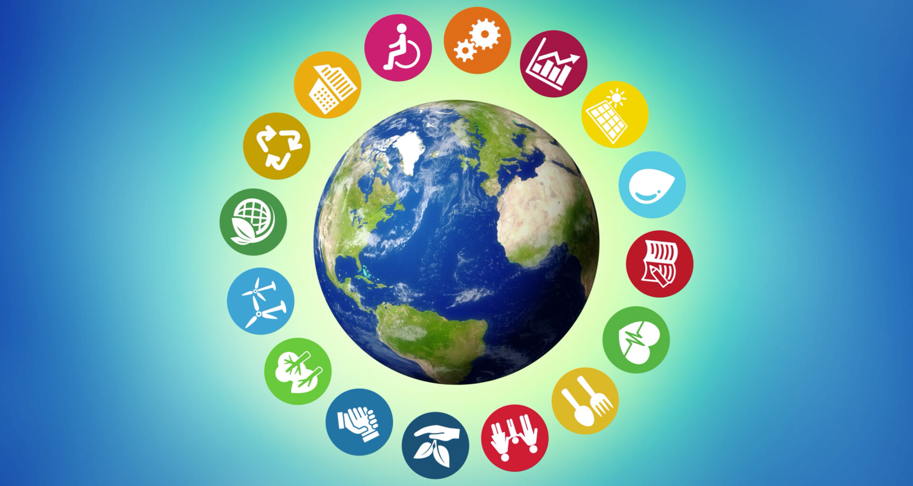
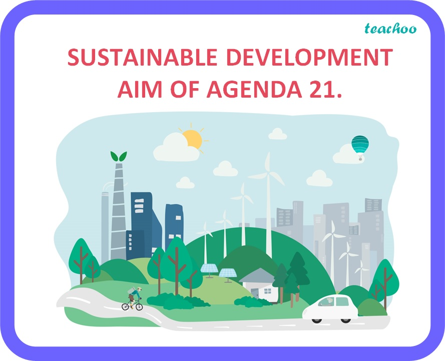

Agenda 21
¿Qué es la agenda 21 y en qué consiste? La Agenda 21 es un plan de acción internacional adoptado en la Cumbre de la Tierra (Río de Janeiro, 1992). Su propósito es guiar a los países hacia un desarrollo sostenible, equilibrando crecimiento económico, justicia social y protección ambiental. Aunque no es jurídicamente vinculante, se convirtió en una referencia clave para figuras políticas públicas y proyectos locales. La Agenda 21 se organiza en 40 capítulos, agrupados en cuatro grandes bloques. Cada bloque aborda un aspecto esencial del desarrollo sostenible:
1. Dimensiones sociales y económicas: Busca mejorar la calidad de vida de las personas, especialmente en países en desarrollo.
Relación con el Desarrollo Sustentable
El desarrollo sustentable busca satisfacer las necesidades del presente sin comprometer las de las futuras generaciones. Se basa en tres pilares: Ambiental, Económico y Social.
Acciones Concretas
- Uso responsable de recursos naturales
- Reducción de la contaminación
- Educación ambiental
- Planeación urbana sostenible
- Participación ciudadana